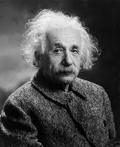

Quem foi Albert Einstein
O Albert Einstein (1879-1955) foi um físico alemão, nascido na cidade de Ulm em 1879. Quando jovem, mudou-se para a Suíça, onde se formou, tornando-se professor da Escola Politécnica de Zurique. Em 1903, casou-se com Mileva Maric, com quem teve dois filhos. O casal permaneceu junto até 1919, mesmo tendo vivido os cinco últimos anos do matrimônio separados.
Einstein foi uma das mentes mais brilhantes da ciência, e o seu legado inclui a explicação do efeito fotoelétrico, a formulação da teoria da relatividade espacial geral e restrita, além de grandes contribuições para a Física Estatística, por meio de sua explicação para o movimento browniano.
